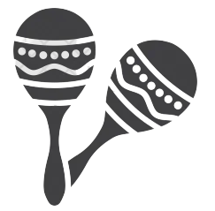
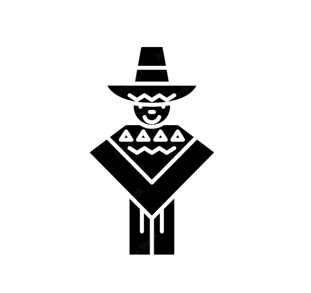
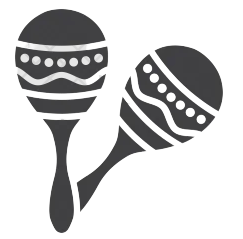
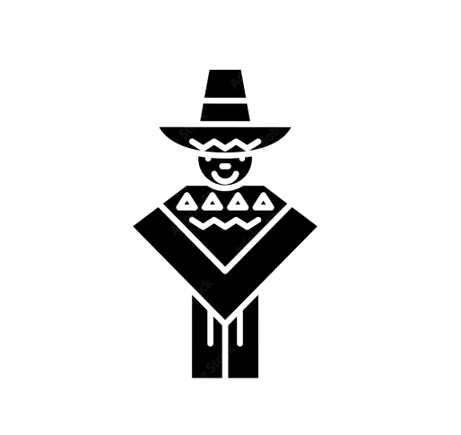

International Mexican Food Convention 2023
 



The Global Summit brings together the community of experts, academics, and activists who comprise the Creative Commons affiliate network in a different country every two years. This year, we hope to expand our invitation list including organizations and individuals.
The Global Summit brings together the community of experts, academics, and activists who comprise the CreativeCommons affiliate network in a different country every two years. This year, we hope to expand our invitation list including organizations and individuals who want to work with us on shared projects thatadvance the cause of the Commons, free culture and open knowledge. So if you're active and engaged in the worlds of open content and knowledge - free software advocates, wikipedians, Opeknowledge,galleries, libraries, museums, archives, governments and foundations, lawyers, and activists - we hope you'll considejoining us this yearto build a stronger, more vibrant commons together
Please contact us per Email for nay further questions about CC Global Summit 2015!